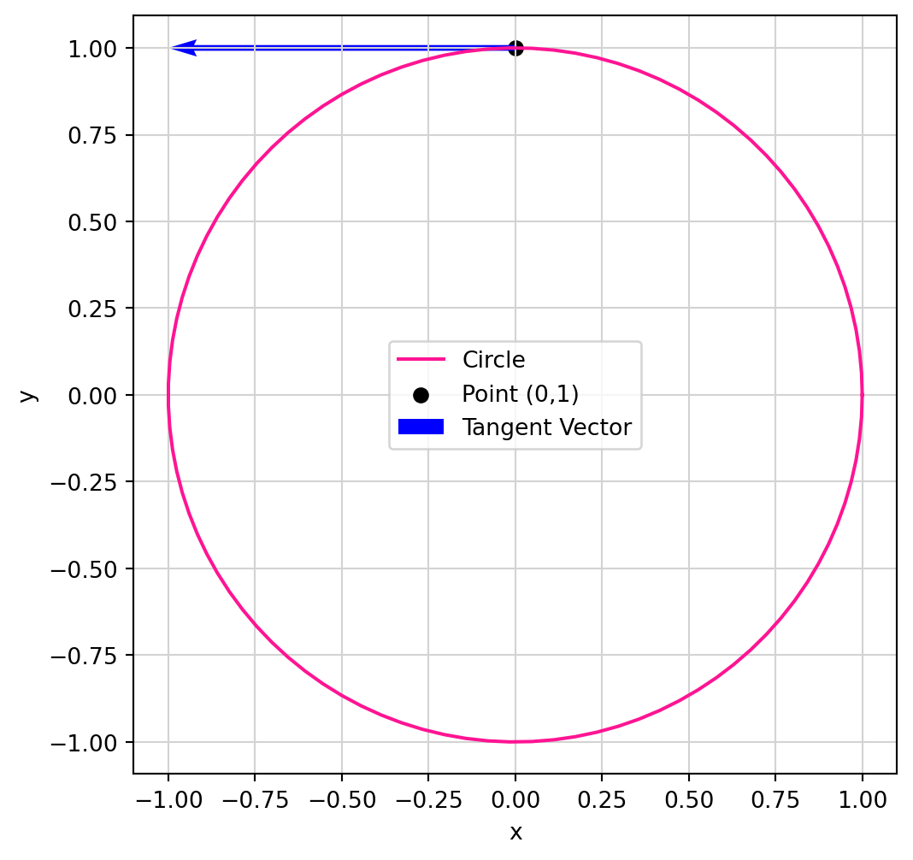
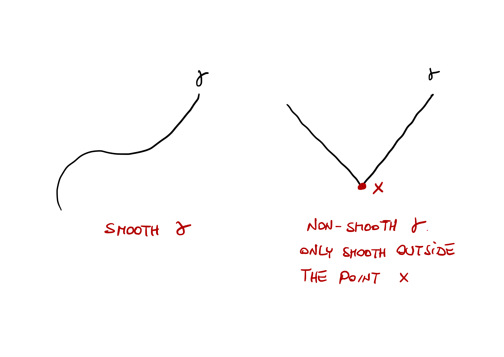
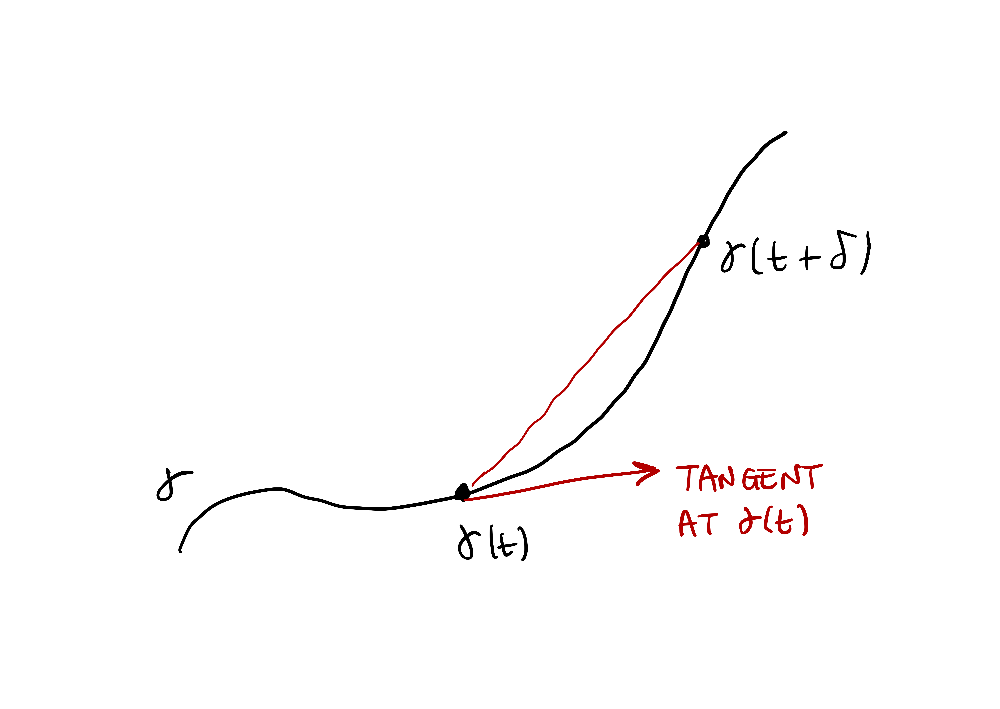
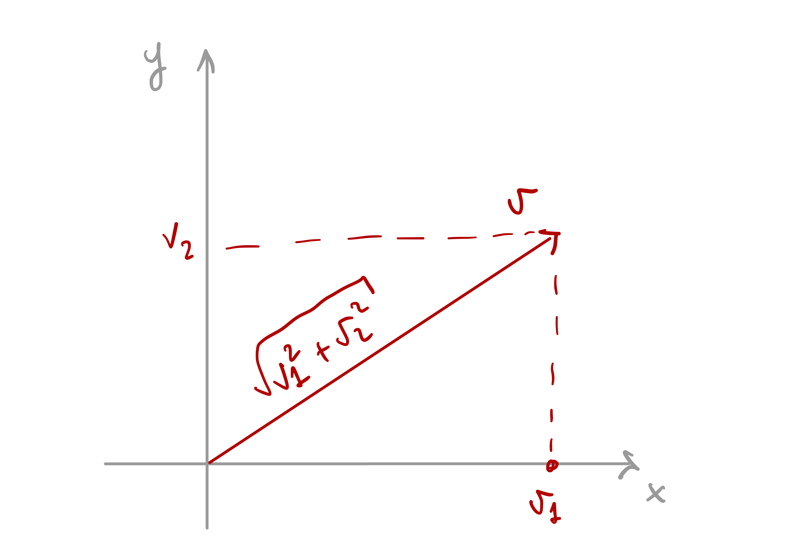
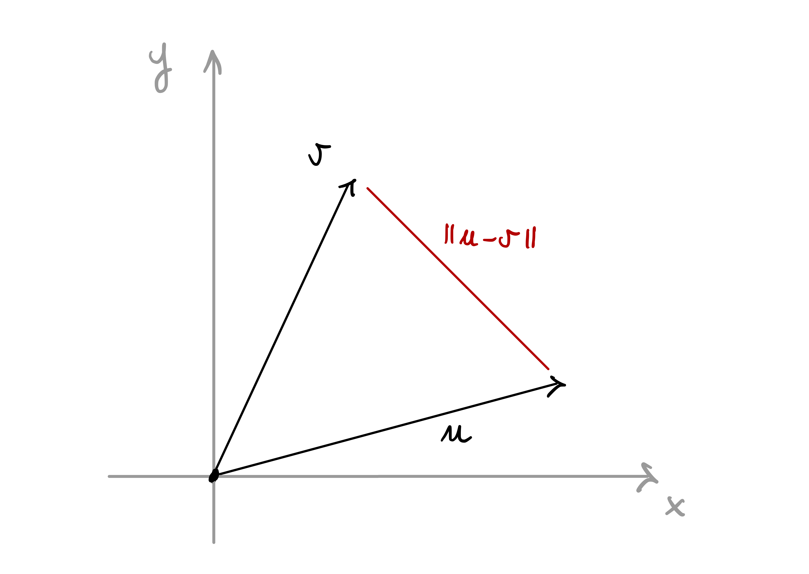
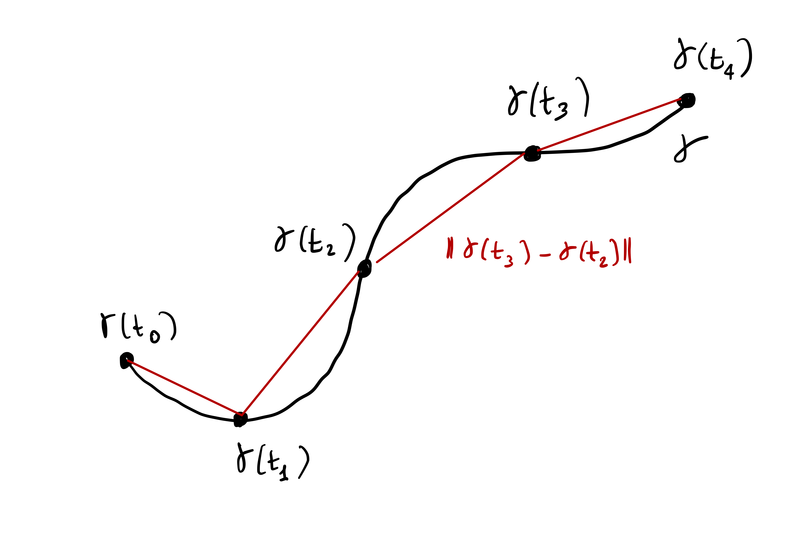
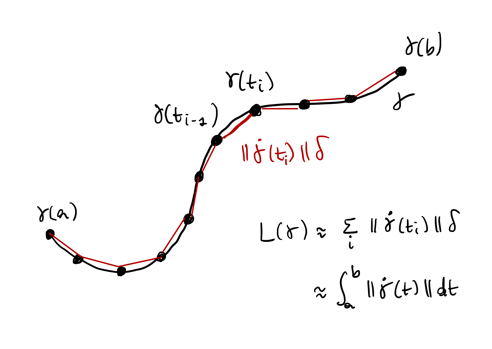
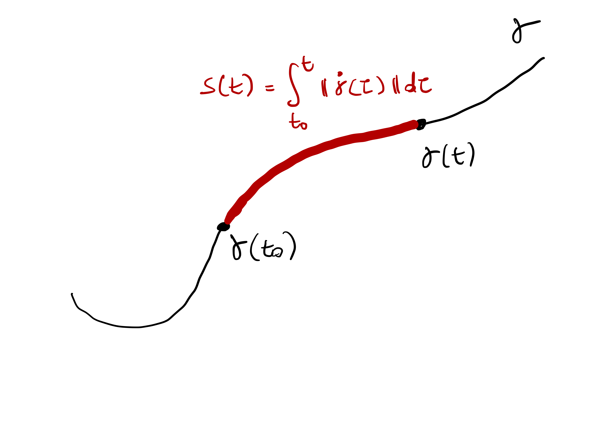
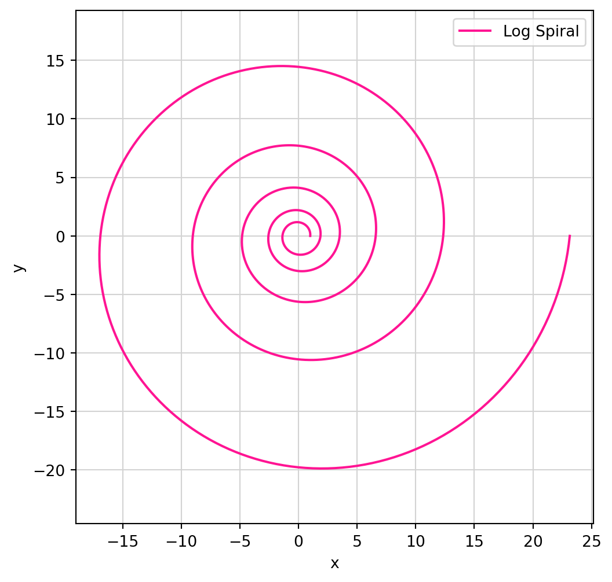

3 Parametrized curves
Let us recall the definition of parametrized curve.
Definition 1: Parametrized curve
A parametrized curve in \(\mathbb{R}^n\) is a function \[
\gamma \ \colon (a,b) \to \mathbb{R}^n \,.
\] where
\[ (a,b) = \{ t \in \mathbb{R}\ \colon \ a < t < b \} \,, \] with \[ - \infty \leq a < b \leq \infty \,. \] The components of \(\gamma(t) \in \mathbb{R}^n\) are denoted by \[ \gamma(t) = ( \gamma_1(t), \ldots, \gamma_n(t) ) \,, \] where the components are functions \[ \gamma_i \ \colon (a,b) \to \mathbb{R}\,, \] for all \(i = 1, \ldots, n\).
As we already mentioned, the aim of the course is to study curves by differentiating them. Let us see what that means for curves.
Definition 2: Smooth functions
A scalar function \(f \ \colon (a,b) \to \mathbb{R}\) is called smooth if the derivative \[
\frac{d^n f}{dt^n}
\] exists for all \(n \geq 1\) and \(t \in (a,b)\).
We will denote the first and second derivatives of \(f\) as follows: \[ \dot f := \frac{d f}{dt} \,, \quad \ddot f := \frac{d^2 f}{dt^2} \,. \]
Example 3
The function \(f(x)=x^4\) is smooth, with \[\begin{align}
& \frac{d f}{dt} = 4x^3 ,\,\, \frac{d^2 f}{dt^2} = 12 x^2 \,, \\
& \frac{d^3 f}{dt^3} = 24 x ,\,\, \frac{d^4 f}{dt^4} = 24 \,, \\
& \frac{d^n f}{dt^n} = 0 \, \text{ for all } \, n \geq 5 \,.
\end{align}\] Other examples smooth functions are polynomials, as well as \[
f(t) = \cos(t) , \,\, f(t) = \sin(t) \,, \,\, f(t) = e^t \,.
\]
Definition 4
Let \(\gamma \ \colon (a,b) \to \mathbb{R}^n\) with \[
\gamma(t) = ( \gamma_1(t), \ldots, \gamma_n(t) )
\] be a parametrized curve. We say that \(\gamma\) is smooth if the components \[
\gamma_i \ \colon (a,b) \to \mathbb{R}
\] are smooth for all \(i=1,\ldots,n\). The derivatives of \(\gamma\) are \[
\frac{d^k\gamma}{dt^k} := \left( \frac{d^k\gamma_1}{dt^k} , \ldots, \frac{d^k\gamma_n}{dt^k} \right)
\] for all \(k \in \mathbb{N}\). As a shorthand, we will denote the first derivative of \(\gamma\) as \[
\dot \gamma:= \frac{d\gamma}{dt} = \left( \frac{d\gamma_1}{dt} , \ldots, \frac{d\gamma_n}{dt} \right)
\] and the second by \[
\ddot \gamma:= \frac{d^2\gamma}{dt^2} = \left( \frac{d^2\gamma_1}{dt^2} , \ldots, \frac{d^2\gamma_n}{dt^2} \right) \,.
\]
In Figure 3.1 we skectch a smooth and a non-smooth curve. Notice that the curve on the right is smooth, except for the point \(x\).

We will work under the following assumption.
Assumption
All the parametrized curves in this lecture notes are assumed to be smooth.
Example 5
The circle \[
\gamma(t) = (\cos(t),\sin(t))
\] is a smooth parametrized curve, since both \(\cos(t)\) and \(\sin(t)\) are smooth functions. We have \[
\dot \gamma= (-\sin(t),\cos(t)) \,.
\] For example the derivative of \(\gamma\) at the point \((0,1)\) is given by \[
\dot \gamma( \pi/2) = (-\sin(\pi/2),\cos(\pi/2)) = (-1,0) \,.
\] The plot of the circle and the derivative vector at \((-1,0)\) can be seen in Figure 3.2.
3.1 Tangent vectors
Looking at Figure 3.2, it seems like the vector \[ \dot \gamma(\pi/2) = (-1,0) \] is tangent to the circle at the point \[ \gamma(\pi/2) = (0,1) \,. \] Is this a coincidence? Not that all. Let us look at the definition of derivative at a point: \[ \dot \gamma(t) := \lim_{\delta \to 0} \frac{\gamma(t + \delta) - \gamma(t)}{\delta} \,. \] If we just look at the quantity \[ \frac{\gamma(t + \delta) - \gamma(t)}{\delta} \] for non-negative \(\delta\), we see that this vector is parallel to the chord joining \(\gamma(t)\) to \(\gamma(t + \delta)\), as shown in Figure 3.3 below. As \(\delta \to 0\), the length of the chord tends to zero. However the direction of the chord becomes parallel to that of the tangent vector of the curve \(\gamma\) at \(\gamma(t)\). Since \[ \frac{\gamma(t + \delta) - \gamma(t)}{\delta} \to \dot \gamma(t) \] as \(\delta \to 0\), we see that \(\dot \gamma(t)\) is parallel to the tangent of \(\gamma\) at \(\gamma(t)\), as showin in Figure 3.3.

The above remark motivates the following definition.
Definition 6: Tangent vector
Let \(\gamma\ \colon (a,b) \to \mathbb{R}^n\) be a parametrized curve. The tangent vector to \(\gamma\) at the point \(\gamma(t)\) is defined as \[
\tau:= \dot \gamma(t) \,.
\]
Example 7: Tangent vector to helix
The helix is described by the parametric curve \[
\gamma\ \colon \mathbb{R}\to \mathbb{R}^3
\] with \[
\gamma_1(t) = \cos (t)\, , \,\,
\gamma_2(t) = \sin (t)\, , \,\,
\gamma_3(t) = t .
\] This is plotted in Figure 3.4 below. The tangent vector at point \(\gamma(t)\) is given by \[
\dot \gamma(t) = ( -\sin(t), \cos(t) , 1) \,.
\] For example in Figure 3.4 we plot the tangent vector at time \(t = \pi/2\), that is, \[
\dot\gamma(\pi/2) = (-1,0,\pi/2) \,.
\] The above looks very similar to the tangent vector to the circle. Except that there is a \(z\) component, and that component is constant and equal to \(1\). Intuitively this means that the helix is lifting from the plane \(xy\) with constant speed with respect to the \(z\)-axis. We will soon give a name to this concept.

Remark 8: Avoiding potential ambiguities
Sometimes it will happen that a curve self intersects, meaning that there are two time instants \(t_1\) and \(t_2\) and a point \(p \in \mathbb{R}^n\) such that \[
p = \gamma(t_1) = \gamma(t_2)\,.
\] In this case there is ambiguity in talking about the tangent vector at the point \(p\): in principle there are two tangent vectors \(\dot\gamma(t_1)\) and \(\dot\gamma(t_2)\), and it could happen that \[
\dot\gamma(t_1) \neq \dot\gamma(t_1)\,.
\] Thus the concept of tangent at \(p\) is not well-defined. We need then to be more precise and talk about tangent at a certain time-step \(t\), rather than at some point \(p\). We however do not amend Definition 6, but you should keep this potential ambiguity in mind.
Example 9: A self intersecting curve
For example consider \(\gamma\ \colon [0,2\pi] \to \mathbb{R}^2\) defined as \[
\gamma_1(t) = \sin (t)\, , \,\,
\gamma_2(t) = \sin (t) \cos(t) \, .
\] This is plotted in Figure 3.5 below. The orgin \((0,0)\) is a point of self-intersection, meaning that \[
\gamma(0) = \gamma(\pi) = (0,0) \,.
\] The tangent vector at point \(\gamma(t)\) is given by \[
\dot \gamma(t) = (\cos(t), \cos^2(t) - \sin^2(t) )
\] and therefore we have two tangents at \((0,0)\), that is, \[
\tau_1 = \dot\gamma(0) = (1,1) \,, \,\,
\tau_2 = \dot\gamma(\pi) = (-1,1) \,.
\]

3.2 Length of curves
For a vector \(v \in \mathbb{R}^n\) with components \[ v=(v_1,\ldots,v_n), \] its length is defined by \[ \left\| v \right\|:= \sqrt{\sum_{i=1}^n v_i^2 } \,. \] The above is just an extension of the Pythagoras theorem to \(\mathbb{R}^n\), and the length of \(v\) is computed from the origin.

If we have a second vector \(u \in \mathbb{R}^n\), then the quantity \[ \left\| u-v \right\|:= \sqrt{\sum_{i=1}^n (u_i-v_i)^2 } \] measures the length of the difference between \(u\) and \(v\).

We would like to define the concept of length of a curve. Intuitively, one could proceed by approximation as in the figure below.

In formulae, this means choosing some time instants \[ t_0, \ldots, t_m \in (a,b) \,. \] The length of the segment connecting \(\gamma(t_{i-1})\) to \(\gamma(t_i)\) is given by \[ \left\| \gamma(t_i) - \gamma(t_{i-1}) \right\| \,. \] Thus \[ {\rm Length}(\gamma) \approx \sum_{i=1}^m \left\| \gamma(t_i) - \gamma(t_{i-1}) \right\| \,. \tag{3.1}\] Intuitively, if we increase the number of points \(t_i\), the quantity on the RHS of (3.1) should approximate \({\rm Length}(\gamma)\) better and better. Let us make this precise.
Definition 10: Partition
Let \((a,b)\) be an interval. A partition \(\mathcal{P}\) of \([a,b]\) is a vector of time instants \[
\mathcal{P} = (t_0,\ldots, t_k) \in [a,b]^{m+1}
\] with \[
t_0 = a < t_1 < \ldots < t_{m-1} < t_m = b \,.
\] If \(\mathcal{P}\) is a partition of \([a,b]\), we define its maximum length as \[
\left\| \mathcal{P} \right\| := \max_{1 \leq i \leq m} |t_{i} - t_{i-1}| \,.
\]
Note that \(\left\| \mathcal{P} \right\|\) measures how fine the partition \(\mathcal{P}\) is.
Definition 11: Length of approximating polygonal curve
Suppose \(\gamma\colon (a,b) \to \mathbb{R}^n\) is a parametrized curve and \(\mathcal{P}\) a partition of \([a,b]\). We define the length of the polygonal curve connecting the points \[
\gamma(t_0)\,, \,\, \gamma(t_1) \,, \,\, \ldots, \,\, \gamma(t_m)
\] as \[
L(\gamma, \mathcal{P}) := \sum_{i=1}^m \left\| \gamma(t_i) - \gamma(t_{i-1}) \right\| \,.
\]
If \(\left\| \mathcal{P} \right\|\) becomes smaller and smaller, that is, the partition \(\mathcal{P}\) is finer and finer, it is reasonable to say that \[ L(\gamma, \mathcal{P}) \] is approximating the length of \(\gamma\). We take this as definition of length.
Definition 12: Rectifiable curve and length
Suppose \(\gamma\colon (a,b) \to \mathbb{R}^n\) is a parametrized curve. We say that \(\gamma\) is rectifiable if the limit \[
L(\gamma) = \lim_{ \left\| P \right\| \to 0} \ L(\gamma,\mathcal{P})
\] exists finite. In such case we call \(L(\gamma)\) the length of \(\gamma\).
This definition definitely corresponds to our geometrical intuition of length of a curve.
Question 13
How do we use such definition in practice to compute the length of a given curve \(\gamma\)?
Thankfully, when \(\gamma\) is smooth, the length \(L(\gamma)\) can be characterized in terms of \(\dot\gamma\). Indeed, when \(\delta\) is small, then the quantity \[ \left\| \gamma(t + \delta) - \gamma(t) \right\| \] is approximating the length of \(\gamma\) between \(\gamma(t)\) and \(\gamma(t + \delta)\). Multiplying and dividing by \(\delta\) we obtain \[ \frac{\left\| \gamma(t + \delta) - \gamma(t) \right\|}{\delta} \, \delta \] which for small \(\delta\) is close to \[ \left\| \dot\gamma(t) \right\| \,\delta \,. \] We can now divide the time interval \((a,b)\) in steps \(t_0, \ldots, t_m\) with \(|t_{i}-t_{i-1}| < \delta\) and obtain \[\begin{align} \left\| \gamma(t_{i}) - \gamma(t_{i-1}) \right\| & = \frac{\left\| \gamma(t_{i}) - \gamma(t_{i-1}) \right\|}{ |t_{i}-t_{i-1}| } |t_{i}-t_{i-1}| \\ & \approx \left\| \dot\gamma(t_i) \right\| \delta \end{align}\] since \(\delta\) is small. Therefore \[ L(\gamma) \approx \sum_{i=1}^m \left\| \gamma(t_{i}) - \gamma(t_{i-1}) \right\| \approx \sum_{i=1}^m \left\| \dot\gamma(t_i) \right\| \,\delta \,. \] The RHS is a Riemann sum, therefore \[ L(\gamma) \approx \int_a^b \left\| \dot\gamma(t) \right\| \, dt \,. \]
The above argument can be made rigorous, as we see in the next theorem.

Theorem 14: Characterizing the length of \(\gamma\)
Assume \(\gamma\ \colon [a,b] \to \mathbb{R}^n\) is a parametrized curve, with \([a,b]\) bounded. Then \(\gamma\) is rectifiable and \[
L(\gamma) = \int_a^b \left\| \dot\gamma(t) \right\| \, dt \,.
\tag{3.2}\]
Proof
Since \(\gamma\) is smooth, in particular \(\dot \gamma\) is continuous. Since \([a,b]\) is bounded, then \(\dot \gamma\) is bounded, that is \[
\sup_{t \in [a,b]} \left\| \gamma(t) \right\| \leq C
\] for some constant \(C \geq 0\). Therefore \[
\int_a^b \left\| \dot\gamma(t) \right\| \, dt \leq C (b-a) < \infty \,.
\] Recalling that \[
L(\gamma) = \lim_{\left\| \mathcal{P} \right\| \to 0} \ L(\gamma,\mathcal{P}) \,,
\] whenever the limit is finite, in order to show (3.2) we then need to prove \[
L(\gamma,\mathcal{P}) \to \int_a^b \left\| \dot\gamma(t) \right\| \, dt
\] as \(\left\| \mathcal{P} \right\| \to 0\). Showing the above means proving that: for every \(\varepsilon> 0\) there exists a \(\delta > 0\) such that, if \(\mathcal{P}\) is a partition of \([a,b]\) such that \(\left\| \mathcal{P} \right\|<\delta\), then \[
\left| \int_a^b \left\| \dot\gamma(t) \right\| \, dt - L(\gamma, \mathcal{P} ) \right| < \varepsilon\,.
\tag{3.3}\]
First, take an arbitrary partition \(\mathcal{P} = (t_0, \ldots, t_m)\) of \([a,b]\). Then for each \(i = 1,\ldots,m\) we have \[ \left\| \gamma(t_i) - \gamma(t_{i-1}) \right\| = \left\| \int_{t_{i-1}}^{t_i} \dot\gamma(t)\, dt \right\| \leq \int_{t_{i-1}}^{t_i}\left\| \dot\gamma(t) \right\| \, dt \] where we used the Fundamental Theorem of calculus, and usual integral properties. Therefore by definition \[\begin{align} L(\gamma,\mathcal{P} ) & = \sum_{i=1}^m \left\| \gamma(t_i) - \gamma(t_{i-1}) \right\| \\ & \leq \sum_{i=1}^m \int_{t_{i-1}}^{t_i} \left\| \dot\gamma(t) \right\| \, dt \\ & = \int_{a}^b \left\| \dot\gamma(t) \right\| \, dt \,. \end{align}\] We have then shown \[ L(\gamma, \mathcal{P}) \leq \int_{a}^b \left\| \dot\gamma(t) \right\| \, dt \tag{3.4}\] for all partitions \(\mathcal{P}\).
Now, note that \(\dot \gamma\) is continuous on the compact set \([a,b]\). Therefore it is uniformly continuous by the Heine-Borel Theorem. Fix \(\varepsilon>0\). By uniform continuity of \(\dot \gamma\) there exists \(\delta >0\) such that \[ |t-s| < \delta \implies \left\| \dot\gamma(t)-\dot\gamma(s) \right\| < \frac{ \varepsilon}{b-a} \,. \tag{3.5}\] for all \(t,s \in [a,b]\). Let \(\mathcal{P} = (t_0, \ldots, t_m)\) be a partition of \([a,b]\) with \(\left\| \mathcal{P} \right\| < \delta\). Recall that \[ \left\| \mathcal{P} \right\| = \max_{i=1,\ldots ,m} |t_i - t_{i-1}| \,. \] Therefore the condition \(\left\| \mathcal{P} \right\| < \delta\) implies \[ |t_i - t_{i-1}| < \delta \tag{3.6}\] for each \(i = 1, \ldots, m\). For all \(i = 1, \ldots, m\) and \(s \in [t_{i-1},t_i]\) we have \[\begin{align} \gamma(t_i) - \gamma(t_{i-1}) & = \int_{t_{i-1}}^{ t_i } \dot\gamma(t)\, dt \\ & = \int_{t_{i-1}}^{ t_i } \dot\gamma(s) + (\dot\gamma(t) - \dot\gamma(s)) \, dt \\ & = ( t_i - t_{i-1} ) \dot\gamma(s) + \int_{t_{i-1}}^{ t_i } (\dot\gamma(t) - \dot\gamma(s)) \, dt \end{align}\] Therefore \[ \left\| \gamma(t_i) - \gamma(t_{i-1}) \right\| = \left\| ( t_i - t_{i-1} ) \dot\gamma(s) + \int_{t_{i-1}}^{ t_i } (\dot\gamma(t) - \dot\gamma(s)) \, dt \right\| \tag{3.7}\] We can now use the reverse triangle inequality \[ | \| x\| - \left\| y \right\|| \leq \left\| x-y \right\| \] and hence \[ \left\| x+y \right\| = \left\| x - (-y) \right\| \geq \| x \| - \left\| y \right\| \] for all \(x,y \in \mathbb{R}^n\). Applying the above to (3.7) we get \[ \left\| \gamma(t_i) - \gamma(t_{i-1}) \right\| \geq ( t_i - t_{i-1} ) \left\| \dot\gamma(s) \right\| - \left\| \int_{t_{i-1}}^{ t_i } (\dot\gamma(t) - \dot\gamma(s)) \, dt \right\| \tag{3.8}\] By standard properties of integral we also have \[ \left\| \int_{t_{i-1}}^{ t_i } (\dot\gamma(t) - \dot\gamma(s)) \, dt \right\| \leq \int_{t_{i-1}}^{ t_i } \left\| \dot\gamma(t) - \dot\gamma(s) \right\| \, dt\,, \] so that (3.8) implies \[ \left\| \gamma(t_i) - \gamma(t_{i-1}) \right\| \geq ( t_i - t_{i-1} ) \left\| \dot\gamma(s) \right\| - \int_{t_{i-1}}^{ t_i } \left\| \dot\gamma(t) - \dot\gamma(s) \right\| \, dt\,. \tag{3.9}\] Since \(t,s \in [t_{i-1},t_i]\), then \[ |t-s| \leq | t_{i} - t_{i-1} | < \delta \] where the last inequality follows by (3.6). Thus by uniform continuity (3.5) we get \[ \left\| \dot\gamma(t) - \dot\gamma(s) \right\| < \frac{\varepsilon}{b-a} \,. \] We can therefore further estimate (3.9) and obtain \[\begin{align} \left\| \gamma(t_i) - \gamma(t_{i-1}) \right\| & \geq ( t_i - t_{i-1} ) \left\| \dot\gamma(s) \right\| - \int_{t_{i-1}}^{ t_i } \left\| \dot\gamma(t) - \dot\gamma(s) \right\| \, dt \\ & \geq ( t_i - t_{i-1} ) \left\| \dot\gamma(s) \right\| - ( t_i - t_{i-1} ) \frac{\varepsilon}{b-a} \, dt \,. \end{align}\] Dividing the above by \(t_i - t_{i-1}\) we get \[ \frac{ \left\| \gamma(t_i) - \gamma(t_{i-1}) \right\| }{ t_i - t_{i-1} } \geq \left\| \dot\gamma(s) \right\| - \frac{\varepsilon}{b-a} \,. \] Integrating the above over \(s\) in the interval \([t_{i-1}, t_i ]\) we get \[ \left\| \gamma(t_i) - \gamma(t_{i-1}) \right\| \geq \int_{t_{i-1}}^{ t_i } \left\| \dot\gamma(s) \right\| \, ds - \frac{\varepsilon}{b-a} (t_i - t_{i-1}) \,. \] Summing over \(i=1,\ldots,m\) we get \[ L(\mathcal{P},\gamma) \geq \int_{a}^b \left\| \dot\gamma(s) \right\| \, ds - \varepsilon \tag{3.10}\] since \[ \sum_{i=1}^m (t_i - t_{i-1}) = t_m - t_0 = b - a \,. \] Putting together (3.4) and (3.10) we get \[ \int_{a}^b \left\| \dot\gamma(s) \right\| \, ds - \varepsilon\leq L(\mathcal{P},\gamma) \leq \int_{a}^b \left\| \dot\gamma(s) \right\| \, ds \] which implies (3.3), concluding the proof.
Thanks to the above theorem we have now a way to compute \(L(\gamma)\). Let us check that we have given a meaningful definition of length by computing \(L(\gamma)\) on known examples.
Example 15: Length of Circle
The circle of radius \(R\) is parametrized by \(\gamma\ \colon [0,2\pi] \to \mathbb{R}^2\) defined by \[
\gamma(t) = (R\cos(t), R\sin(t)) \,.
\] Then \[
\dot \gamma(t) = (-R\sin(t), R\cos(t))
\] and \[\begin{align}
\left\| \dot\gamma(t) \right\| & = \sqrt{ \dot \gamma_1^2(t) + \dot \gamma_2^2(t) } \\
& = R \sqrt{ \sin^2(t) + \cos^2 (t)} = R\,.
\end{align}\] Therefore \[
L(\gamma) = \int_{0}^{2\pi} \left\| \dot\gamma(t) \right\| \, dt = \int_0^{2\pi} R \, dt = 2 \pi R
\] as expected.
Example 16: Length of helix
Let us consider one full turn of the Helix of radius \(R\) and rise \(H\). This is parametrized by \[
\gamma(t) = (R\cos(t), R\sin(t) ,Ht)
\] for \(t \in [0,2\pi]\). Then \[
\dot \gamma(t) = (-R\sin(t), R\cos(t) , H) \,,
\] and \[\begin{align}
\left\| \dot \gamma(t) \right\| & = \sqrt{ \dot\gamma_1^2 + \dot\gamma_2^2 + \dot\gamma_3^2 } \\
& = \sqrt{ R^2\sin^2(t) + R^2\cos^2(t) + H^2 } = \sqrt{R^2 + H^2} \,.
\end{align}\] Therefore \[
L(\gamma) = \int_0^{2\pi} \left\| \dot\gamma(t) \right\| \, dt = 2 \pi \sqrt{R^2 + H^2} \,.
\]
3.3 Arc-length
We have just shown in Theorem 14 that the length of a regular curve \(\gamma\ \colon [a,b] \to \mathbb{R}^n\) with \([a,b]\) bounded is given by \[ L(\gamma) = \int_a^b \left\| \dot\gamma(t) \right\| \,t \,. \] Using this formula, we introduce the notion of length of a portion of \(\gamma\).
Definition 17: Arc-length
Let \(\gamma\, \colon (a,b) \to \mathbb{R}^n\) be a curve, with \((a,b)\) possibly unbounded. We define the arc-length of \(\gamma\) starting at the point \(\gamma(t_0)\) as the function \(s \colon \mathbb{R}\to \mathbb{R}\) defined by \[
s(t) := \int_{t_0}^t \left\| \gamma(\tau) \right\|\, d\tau \,.
\]

Remark 18
A few remarks:
Arc-length is well-defined: Indeed, \(\gamma\) is smooth, and so \(\dot \gamma\) is continuous. WLOG assume \(t \geq t_0\). Then \[ s(t) = \int_{t_0}^t \left\| \gamma(\tau) \right\|\, d\tau \leq (t-t_0) \max_{ \tau \in [t_0,t] } \left\| \dot\gamma(\tau) \right\| < \infty \,. \]
We always have \[ s(t_0)=0\,. \]
We have \[ t > t_0 \implies s(t) \geq 0 \] and \[ t < t_0 \implies s(t) \leq 0 \,. \]
Choosing a different starting point changes the arc-length by a constant: For example define \(\tilde{s}\) as the arc-length starting from \(\tilde{t}_0\), that is, \[ \tilde{s}(t) := \int_{\tilde{t}_0}^t \left\| \dot\gamma(\tau) \right\| \, d\tau \,. \] Then by the properties of integral \[\begin{align} s(t) & = \int_{t_0}^t \left\| \dot\gamma(\tau) \right\| \, d\tau \\ & = \int_{t_0}^{\tilde{t}_0} \left\| \dot\gamma(\tau) \right\| \, d\tau + \int_{\tilde{t}_0}^{t} \left\| \dot\gamma(\tau) \right\| \, d\tau \\ & = \int_{t_0}^{\tilde{t}_0} \left\| \dot\gamma(\tau) \right\| \, d\tau + \tilde{s}(t) \,. \end{align}\] Hence \[ s = c + \tilde{s} \] with \[ c := \int_{t_0}^{\tilde{t}_0} \left\| \dot\gamma(\tau) \right\| \, d\tau \,. \] Note that \(c\) is the arc-length of \(\gamma\) between the starting points \(\gamma(t_0)\) and \(\gamma(\tilde{t}_0)\).
The arc-length is a differentiable function: Since \(\dot\gamma\) is continuous, by the Fundamental Theorem of Calculus we have \[ \dot s(t) = \frac{d}{dt} \int_{t_0}^t \left\| \dot\gamma(\tau) \right\| \, d\tau = \left\| \dot\gamma(t) \right\| \,. \]
Example 19: Circle
The circle of radius \(R\) is parametrized by \(\gamma\ \colon [0,2\pi] \to \mathbb{R}^2\) defined by \[
\gamma(t) = (R\cos(t), R\sin(t)) \,.
\] Then \[
\dot \gamma(t) = (-R\sin(t), R\cos(t)) \,, \quad \left\| \dot\gamma(t) \right\| = R \,.
\] Therefore, for any fixed \(t_0 \in [0,2\pi]\) we have \[
s(t) = \int_{t_0}^{t} \left\| \dot\gamma(\tau) \right\| \, d\tau = \int_{t_0}^{t} R \, d\tau = (t - t_0) R \,.
\] In particular we see that \(\dot s = R\) is constant.
Example 20: Logarithmic spiral
The Logarithmic spiral is defined by \(\gamma\ \colon [0,2\pi] \to \mathbb{R}^2\) with \[
\gamma(t) = (e^{kt} \cos(t), e^{kt} \sin(t)) \,,
\] where \(k \in \mathbb{R}\), \(k \neq 0\), is called the growth factor. Then \[
\dot \gamma_1(t) = e^{kt} ( k \cos(t) - \sin(t) )
\] \[
\dot \gamma_2(t) = e^{kt} ( k \sin(t) + \cos(t) )
\] and so, after some calculations, \[
\left\| \dot\gamma(t) \right\|^2 = \dot\gamma_1^2 + \dot\gamma_2^2 = (k^2 + 1) e^{2kt} \,.
\] The arc-length starting from \(t_0\) is \[\begin{align}
s(t) & = \int_{t_0}^t \left\| \dot\gamma(\tau) \right\| \, d \tau \\
& = \sqrt{k^2 + 1} \int_{t_0}^t e^{k \tau} \, d \tau \\
& = \frac{\sqrt{k^2 + 1}}{k} ( e^t - e^{t_0} ) \,.
\end{align}\]

3.4 Scalar product in \(\mathbb{R}^n\)
3.5 Speed of a curve
Given a curve \(\gamma\) we defined the tangent vector at \(\gamma(t)\) to be \[ \dot \gamma(t) \,. \] The tangent vector measures the change of direction of the curve. Therefore the magnitude of \(\dot \gamma\) can be interpreted as the speed of the curve.
Definition 21
Let \(\gamma\ \colon (a,b) \to \mathbb{R}^n\) be a curve. We define the speed of \(\gamma\) at the point \(\gamma(t)\) by \[
\left\| \dot \gamma(t) \right\| \,.
\] We say that \(\gamma\) is a unit-speed curve if \[
\left\| \dot \gamma(t) \right\| = 1
\] for all \(t \in (a,b)\).
Remark 22
The derivative of the arc-length \(s\) gives the speed of \(\gamma\): indeed recall that \[
s(t) = \int_{t_0}^t \left\| \dot\gamma(\tau) \right\| \, d\tau \,.
\] Then \[
\dot s(t) = \left\| \dot\gamma(t) \right\| \,.
\]